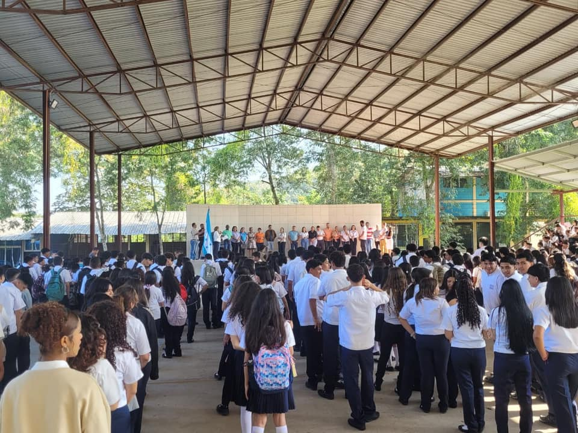
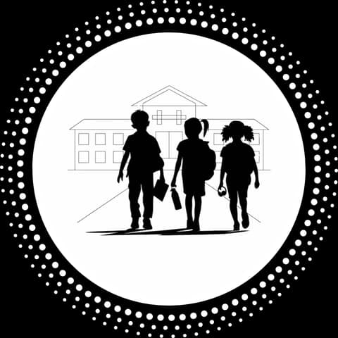
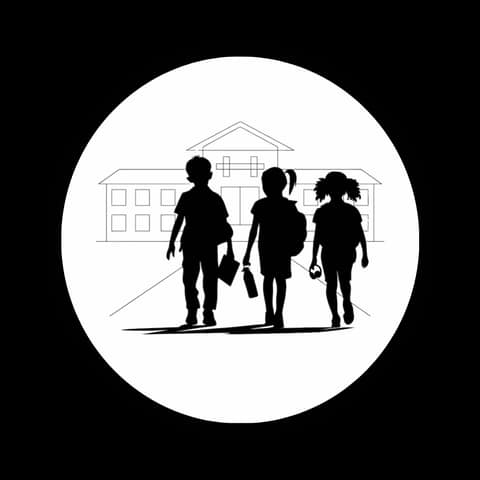
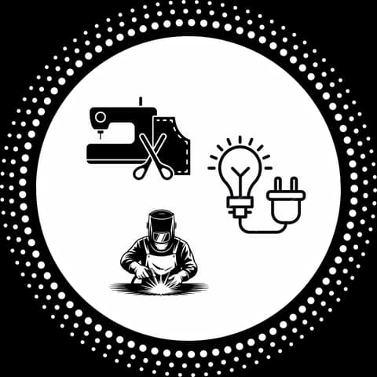
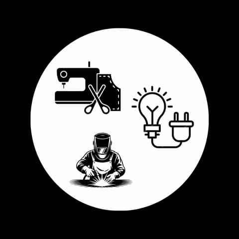
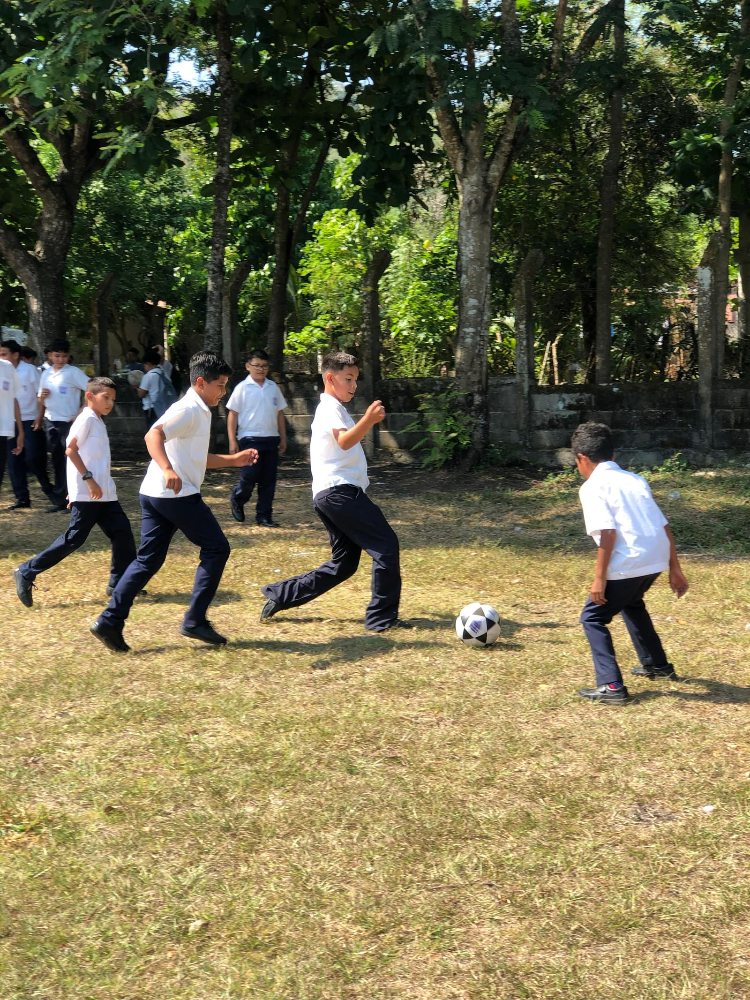
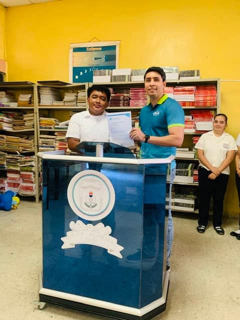
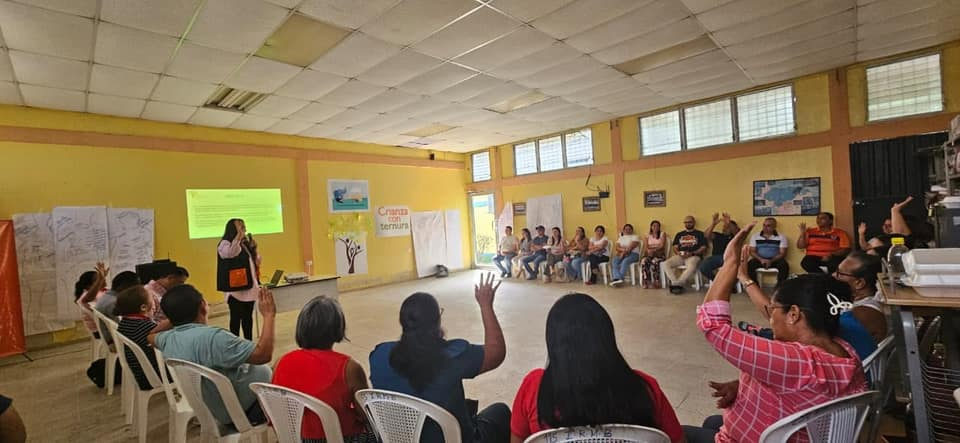

Primer ingreso
- Partida de nacimiento original
- Copia de partida de nacimiento
- Copia de identidad del padre o encargado
- Documentación llena del proceso de matrícula
- 2 fotografías tamaño carnet

Agua Blanca Sur, El Progreso, Yoro — desde 1984
Educación básica, orientación técnica desde el III Ciclo y tres bachilleratos para continuar después de noveno grado. Todo dentro de la misma comunidad, en Agua Blanca Sur.
Matrícula abierta · enero 2027 · lunes a viernes, 8:00 AM–12:00 PM
Identidad institucional
Ese es el lema que acompaña al instituto desde su fundación. Combina aprendizaje académico con orientación técnica para que cada estudiante encuentre una ruta acorde a sus habilidades, intereses y metas familiares.


Oferta institucional
La organización académica facilita que el estudiante avance de forma ordenada por el III Ciclo y, al terminar noveno grado, hacia el bachillerato.
El III Ciclo (7mo a 9no grado) se cursa en modalidad básica o con orientación técnica. Al terminar noveno grado, el bachillerato ofrece tres programas técnicos y académicos.
¿No sabes cuál elegir? Haz el test vocacionalSéptimo, octavo y noveno grado en modalidad básica.


Estructuras Metálicas, Electricidad y Corte y Confección desde séptimo a noveno grado.


Informática, Contaduría y Finanzas, y Ciencias y Humanidades.
Carrera destacada
El área de Informática es la que más actividad genera en el instituto: proyectos de laboratorio, prácticas de soporte técnico y la Feria de Inteligencia Artificial, donde los estudiantes exponen su trabajo ante toda la comunidad educativa.


Aprender haciendo
Las orientaciones técnicas permiten explorar áreas prácticas desde el III Ciclo: estructuras metálicas, electricidad y corte y confección. Esta base ayuda al estudiante a descubrir intereses vocacionales antes de elegir su siguiente etapa.


Fuera del aula
Danza, banda de guerra, fútbol y actos cívicos que forman comunidad tanto como las clases.



Más allá del aula
Programas de becas, capacitación docente y formación en oratoria que llegan al instituto gracias a alianzas reales con organizaciones que trabajan por la educación en Honduras.


Matrícula abierta 2027
Atención de lunes a viernes, 8:00 AM–12:00 PM, durante enero de 2027. Matrícula extraordinaria en febrero.
Enero 2027
Matrícula ordinaria
Lunes a viernes, 8:00 AM–12:00 PM
Febrero 2027
Matrícula extraordinaria
El instituto en video
Videos institucionales, recorridos por las instalaciones y momentos de la vida estudiantil.
¿Tienes preguntas?
Agua Blanca Sur, El Progreso, Yoro, Honduras.
Ver ubicación y cómo llegar →Lunes a viernes, 8:00 AM – 12:00 PM (matrícula, enero 2027).
Formulario de contacto y redes sociales del instituto.
Ir a Contacto →